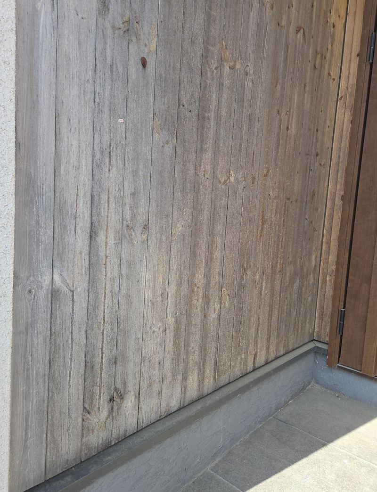
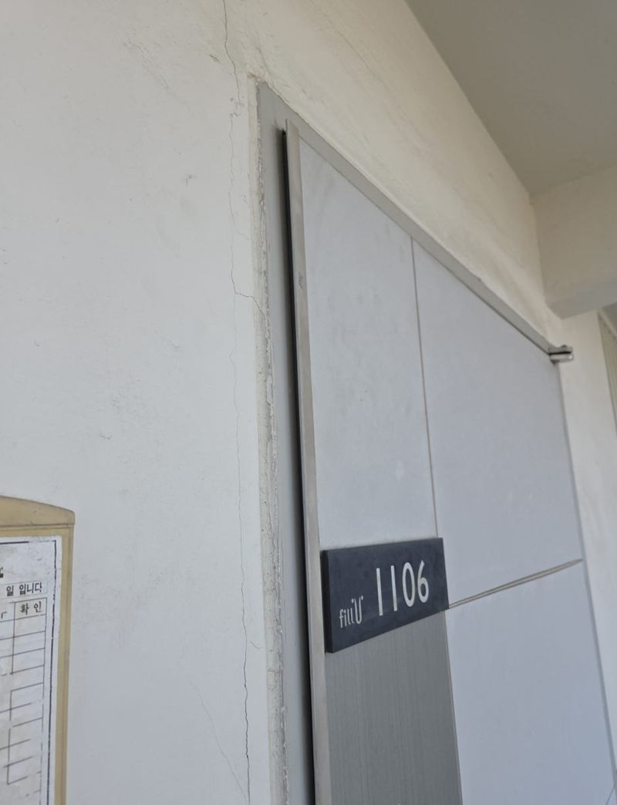
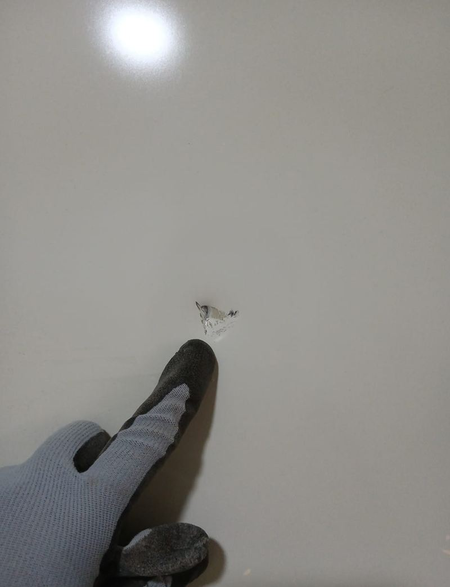
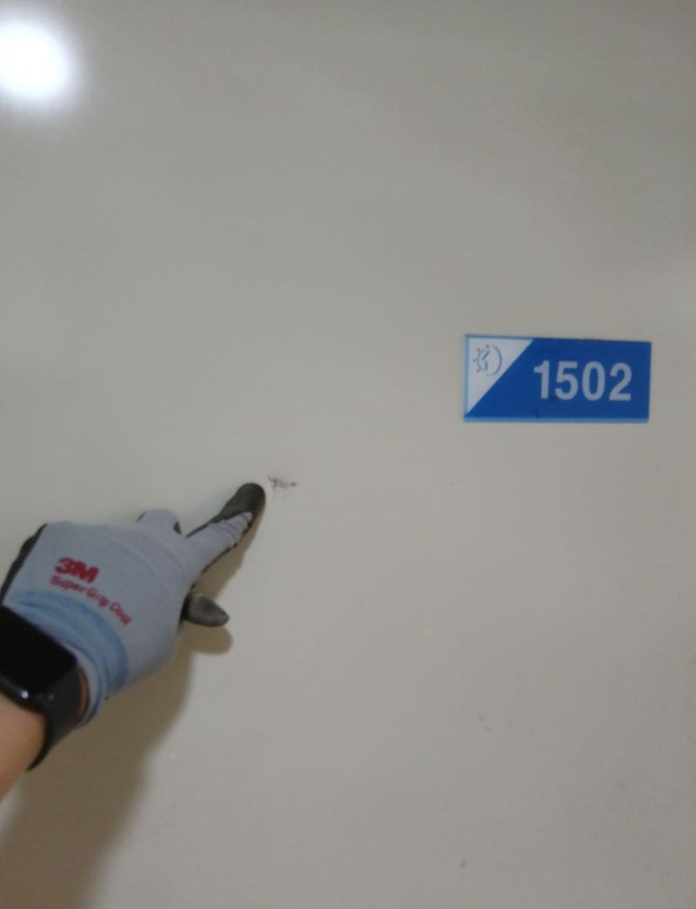

홈 › 현관문·방화문
현관문·방화문 수리 교체
실제 현장 6곳
현관문은 매일 몇 번씩 여닫는 문이라 경첩이 처지고, 틀이 틀어지고, 아래가 녹슬어요. 집 현관문부터 건물 출입구 철제 방화문까지 수리로 될지 교체가 필요한지 사진을 보고 먼저 같이 판단해요.
이런 증상이면 연락 주세요
- 문이 끝까지 안 닫히거나 바닥에 끌릴 때힌지 처짐, 문짝 휨, 문틀 틀어짐 중 어디가 원인인지 확인해요.
- 현관 철제문이 녹슬고 칠이 벗겨졌을 때표면 복원으로 될지, 문짝을 바꿔야 할지 상태를 보고 나눠요.
- 문을 강제로 열어 잠금부가 망가졌을 때도어락 자리와 문 표면을 함께 복구해요.
- 도어락을 새로 달거나 바꾸고 싶을 때기존 타공 자리에 맞는 제품인지부터 확인해요.
지역별 현관문·방화문 현장
 평택 노후 철제 방화문 문틀 포함 교체 비용평택
평택 노후 철제 방화문 문틀 포함 교체 비용평택 안양 스마트키 도어락 설치·교체 방법안양
안양 스마트키 도어락 설치·교체 방법안양
기흥 현관 루바 제거 후 파벽돌 시공 과정용인 기흥
광명 현관 방화문 틀어짐, 힌지 수리 방법광명
오산 현관 철제문 저렴하게 복원하는 방법오산
오산 현관문 강제 개방 후 수리 방법과 순서오산
현관문 수리, 자주 묻는 질문
현관문 전체를 바꾸지 않고 고칠 수 있나요?
경첩이나 도어클로저처럼 부품 문제라면 수리로 해결되는 경우가 많아요. 문짝이 휘었거나 아래가 삭았다면 교체를 권하기도 해요.
아파트 현관 방화문도 작업하나요?
네, 집 현관 방화문과 건물 출입구 철제문 모두 작업해요. 관리 규정이 있는 단지라면 미리 확인해 주세요.
문 전체 사진과 문제 부위 사진을 준비해서 전화 주세요.
전화 상담 010-4517-9872